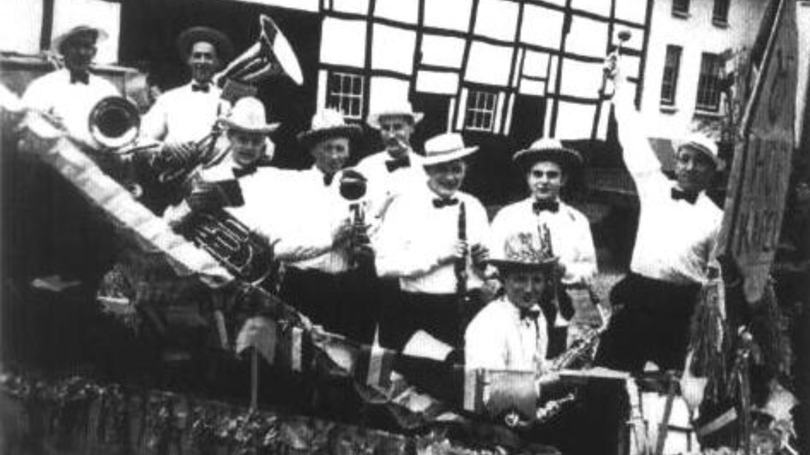
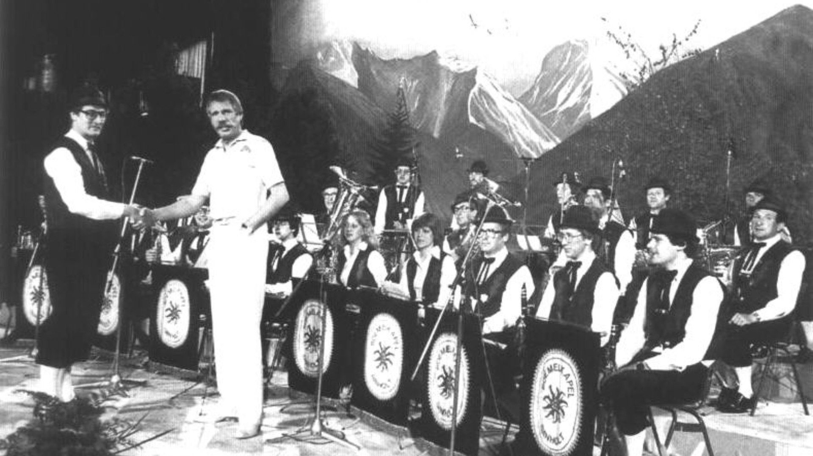

Geschiedenis

1952
Ontstaan
De Boemelkapel dankt haar ontstaan aan een toevalligheid. Begin jaren vijftig ontdekte schoolmeester Jos Bendermacher, voormalig dirigent van Harmonie Amicitia Banholt, op een bepaalde dag een boekje met aardige blaasmuziek voor harmoniebezetting. Het boekje, "Aurora", bevatte 32 lichtemuziekwerkjes. Omdat na de repetitie van de harmonie toch nog altijd enkele muzikanten door bleven blazen, schreef Jos Bendermacher wat partijen uit. In 1952, op carnavalszondag, stonden tien tot vijftien leden van de harmonie na de H. Mis bij elkaar aan de kerk. Zij besloten een rondgang te houden door Banholt, Terlinden, en Reijmerstok. Overal waar men opendeed werd een van de 32 stukjes gespeeld en natuurlijk iets gedronken. Men had tot 22.00u nodig om alle huizen af te werken. Jac. Bendermacher, een van de zonen van Jos Bendermacher, nam al gauw de taak op zich om voor elke inzet enkele tellen vooraf te geven. En zo had Banholt binnen korte tijd zijn blaaskapel en dirigent. Op de achtergrond bleef Jos Bendermacher meehelpen aan het succes van de kapel; hij maakte de partijen "passend" en in zijn woning werden ontelbare repetities gehouden.

1981
Blaastest
Sinds 1975 organiseerden de NCRV en het Limburgs Dagblad gezamenlijk de zogeheten Blaastest: een wedstrijd voor muziekgezelschappen met Tiroler, Egerlander, of Beierse muziek op het repertoire. In 1979 nam de Boemelkapel deel aan een van de voorrondes in Weert. Drie juryleden beoordeelden de prestaties: de bekende trompettist Willy Schobbe, Rene Vanstreels uit Belgie en de Luxemburger George Wagner. De Banholter Boemelkapel behaalde 345,5 punten en hun optreden werd door de jury zeer gewaardeerd, maar gaf toch nog geen toegang tot de Blaastestfinale van dat jaar. Twee jaar later, op 20 maart 1981, werd deelgenomen aan een voorronde in Bree. De Boemelkapel scoorde 198,5 punt bereikte een 5e plaats op de eindranglijst en had zo recht op deelname aan de Blaastestfinale. Banholt bereidde zich goed voor op deze wedstrijd, die plaatsvond in de Rodahal op vrijdag 22 mei 1981. Er namen 7 kapellen deel aan de finale (5 Nederlandse, 1 Belgische en 1 kapel uit Luxemburg). De presentatie was in handen van niemand minder dan Ted de Braak, geassisteerd door Noortje de Vries. De jury bestond uit Freek Mestrini (Orginal Egerlander Musikanten) Harry de Groot (NCRV), Pol Cabus (BRT II, Omroep Limburg), George Wagner (RTL Luxemburg), Henk Kleinmeyer (v.m. Glannerbrugger Muzikanten), Willy Schobben (dirigent Big Band en ex-AVRO-dansorkest) en Anita Enders (Deutslandfunk Keulen). Van het hele programma werden radio-opnames gemaakt voor BRT II en Omroep Limburg en tv-opnames voor de NCRV. De Boemelkapel haalde met 71 punten een 4e plaats. Deze finaleplaats gaf de kapel recht op een plaatopname: NCRV-Limburgs Dagblad Blaasfestival Volume 6. In de regionale pers werd de Boemelkapel veel lof toegezwaaid. Op vrijdag 3 juli tenslotte volgde de 70 minuten durende tv-uitzending van de Benelux Blaastest 1981.